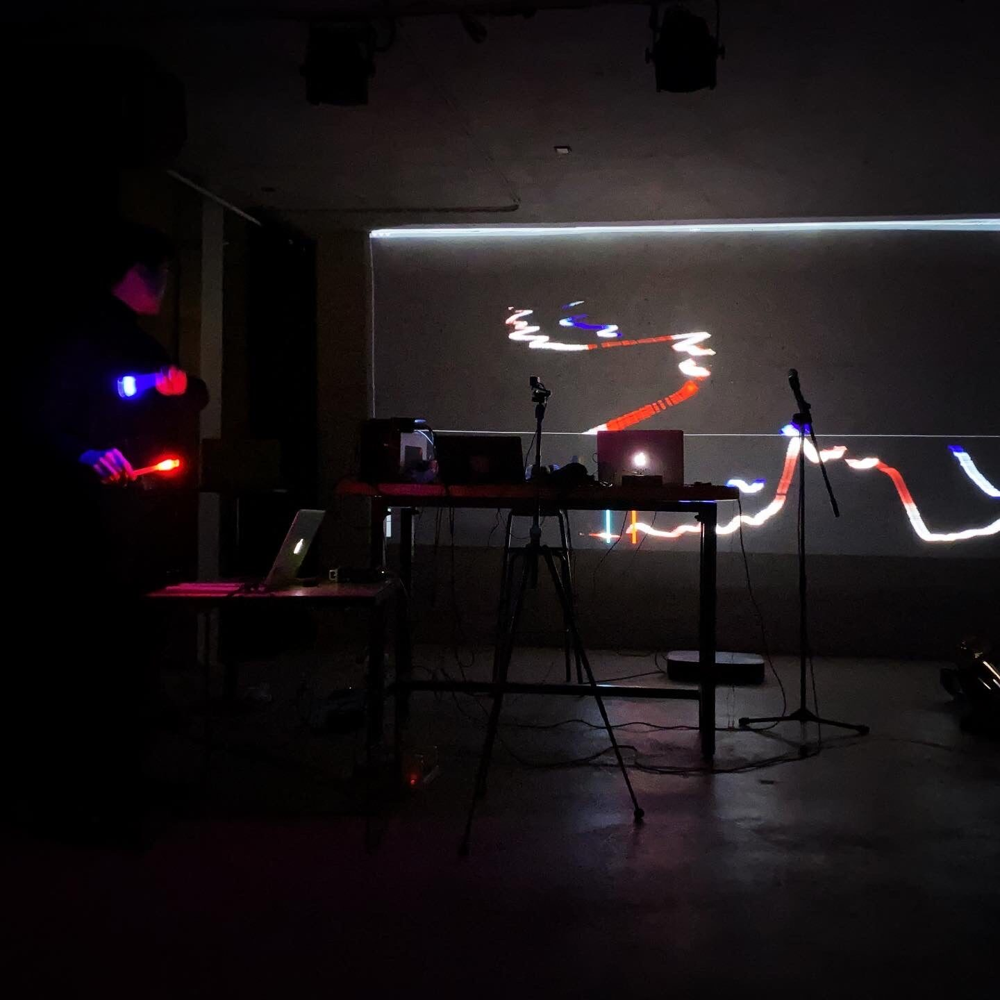
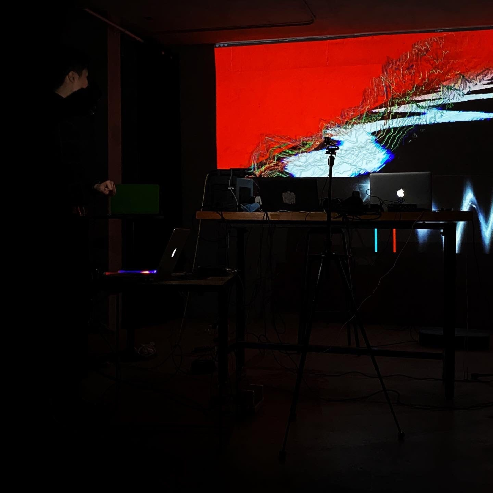
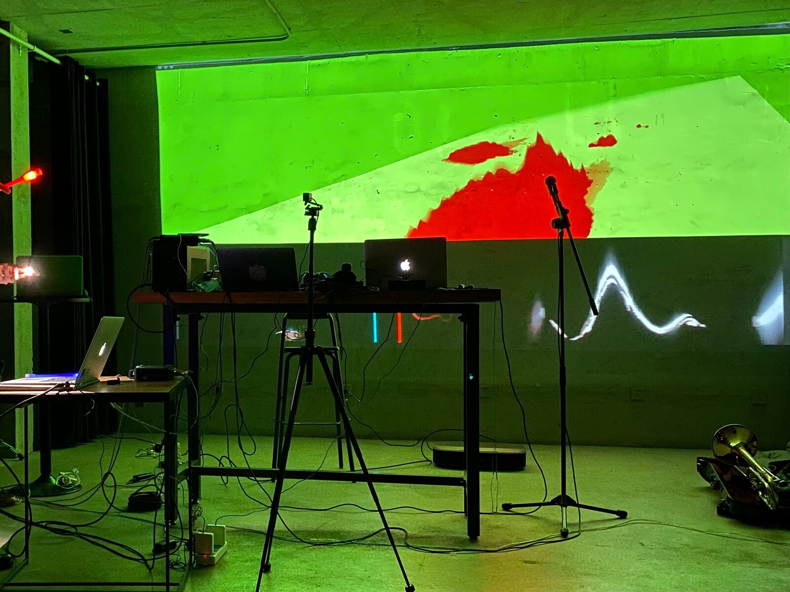
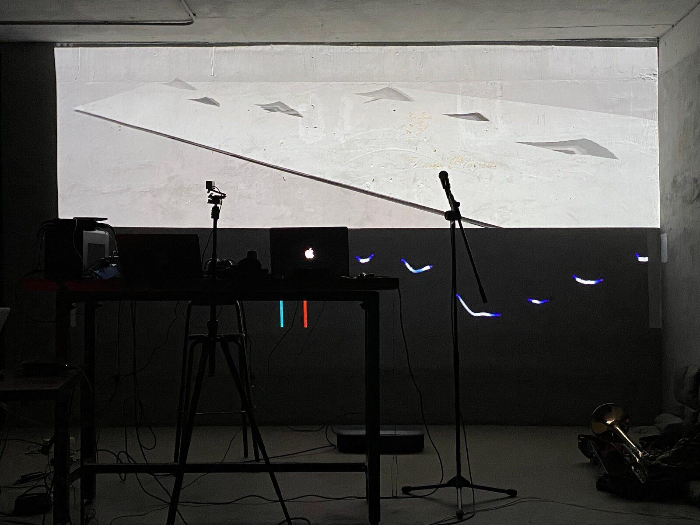

Flowing Light
PROGRAM NOTES
The audiovisual content in "Flowing Light" is presented as a fantasy scene composed of virtual landforms and ambient sounds. It’s based on the author's creative intention to guide the order in the virtual space with the light of real space. Through digital means, the author transforms ordinary illumination light into a control source, forming a deep-seated sensory penetration and highly integrated audio-visual performance.
PERFORMANCE REQUIREMENTS
- Equipment:
1.Stereo PA system.
2.A piar of TRS cables(unbalanced).
3.High resolution LED screen or projector(200 inches or bigger)
- space: Traditional concert stage or gallery
- performer(s):The author will perform the piece personally.
- feasibility:
My works of the same kind had been performed in several international activities such as MUSICAOUSTICA-BEIJING(2011~2019), Poland Audio ART FEStival(2014), B3+Beijing moving art exhibition(CAFA, 2015), CIME(Morelia,2016), ISCM(Beijing,2018), ICMC 2020.
MEDIA
https://vimeo.com/534912713
2.Photos：







